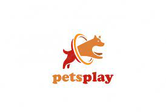

Bem vindo ao Centro Veterinário PetsPlay
Somos um centro veterinário focado no atendimento de pequenos animais que atua da prevenção até maiores procedimentos emergenciais 24h. Nossa equipe especializada, conta com equipamentos modernos e instalações adequadas para o melhor atendimento de seu pet. Sempre buscamos oferecer o melhor atendimento para você e seu melhor amigo. O PetsPlay é um hospital completo, com atendimento a especialidades, clínica geral, serviço de vacinas, laboratório clínico, exames de imagem, internação, centro de estética animal completo com serviço de leva e traz, farmácia veterinária, pet shop e filhotes. Com a integração dos serviços prestados, oferecendo a você e seu animal de estimação, maior conforto, agilidade e segurança.